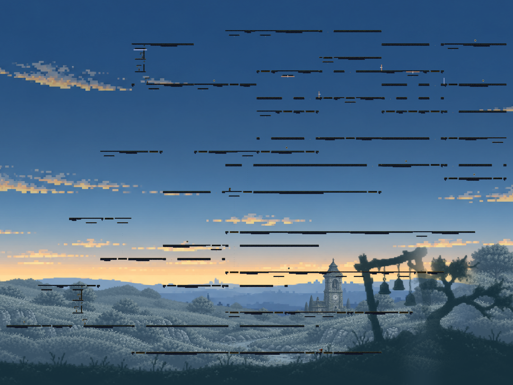
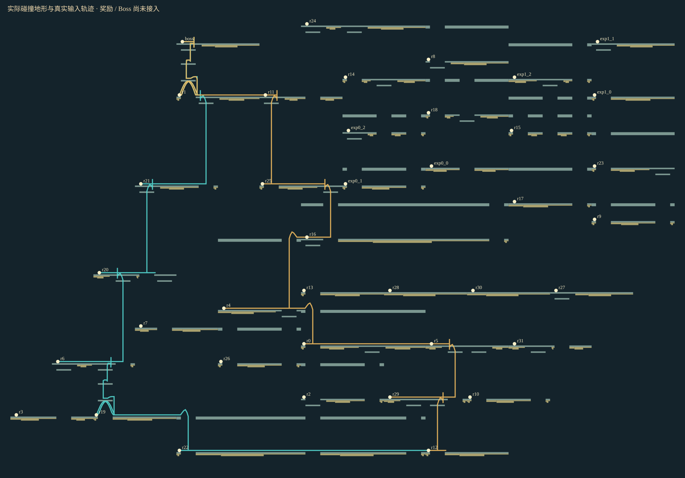
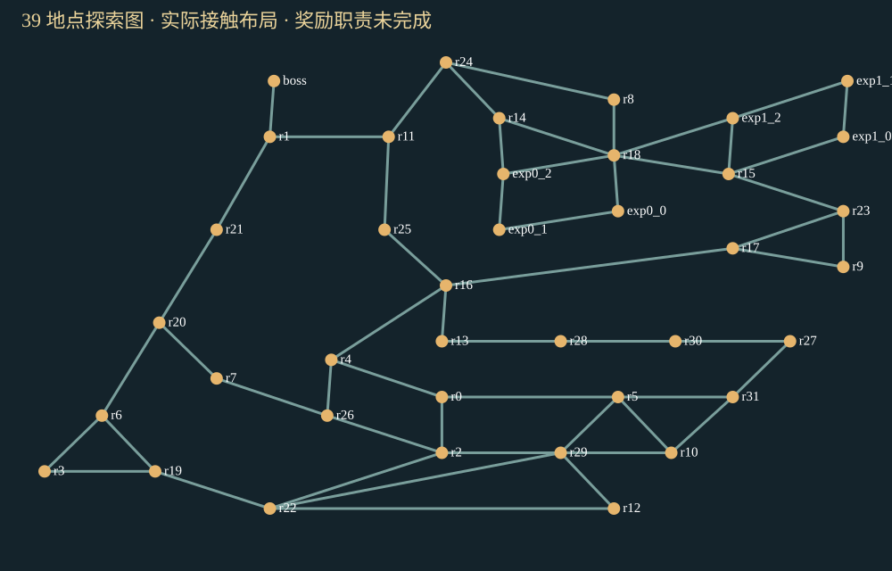

39 个真实 Macro、32 个核心探索地点，已接入完整 Godot 物理世界。当前仍是工程候选：地形过于规则、行动家族重复，宝箱、敌人生态和 Boss 尚未落实；设计目标未达成，不进入生产库。
调试试玩（奖励 / Boss 未接入） · 结构化验证数据 · 正式主线规模基线 · 任务职责与未完成项
Godot 实例化的完整地形；没有 Map 填充平台。点击查看原图。

青 / 金线来自两条完整实际轨迹。它们不是任务可达性的抽象替代；未落实的奖励与回程条件仍阻止整图验收。


程序输入回放，1 倍速，原生帧对照通过。短片为连续摘录；完整路线保留等待和恢复。
| 固定策略 | 实际时长 | 射击 | 结果 |
|---|---|---|---|
| full-region-approach-0 | 82.1 秒 | 6 | 通过 |
| full-region-approach-1 | 103.5 秒 | 3 | 通过 |
| full-region-camp-and-continuous-return | 108.9 秒 | 0 | 通过 |
旧内容直接扩大时，主路 127 秒且没有开枪，已淘汰。内容反馈后主路约 82 秒、6 次空中击铃反冲。端口间距和跨井相位约束已补入现有流程。站立等待、瞄准和稳定到达仍占相当部分，尚不能宣称节奏优于正式游戏。
正式单图为 20–23 地点、58–68 个较小 Module；这里是 39 个 Macro，两种粒度不可直接比较。当前占地外框约 7232×4844 世界单位，较大的探索网络不代表已实现更大的有效探索空间。96–128 内容预算、更丰富的区域地形、奖励深度及趣味验收仍未完成。
没有新真人试玩或趣味认可。核心有限路线、独立相位样本与技术验证，均不替代全部状态下的防 Softlock、真实奖励回程与整图品质。